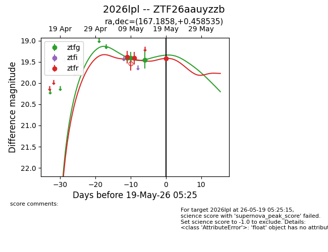
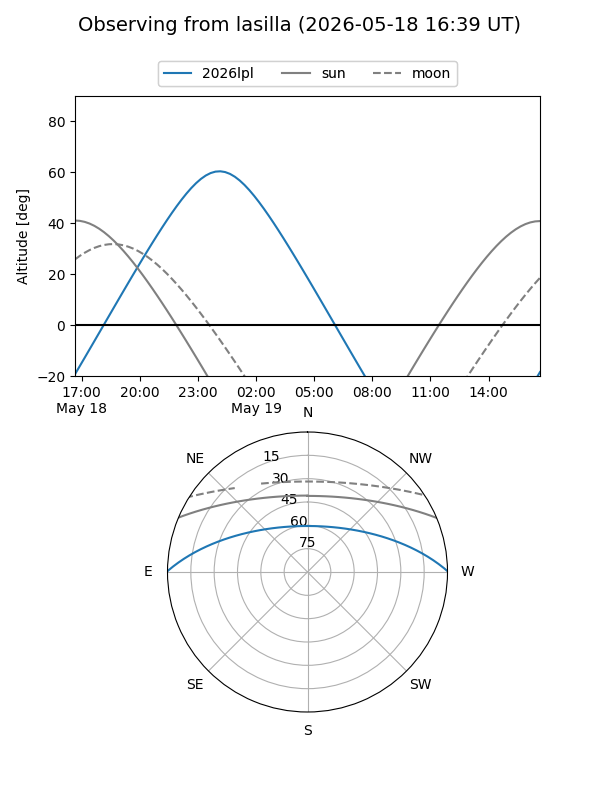
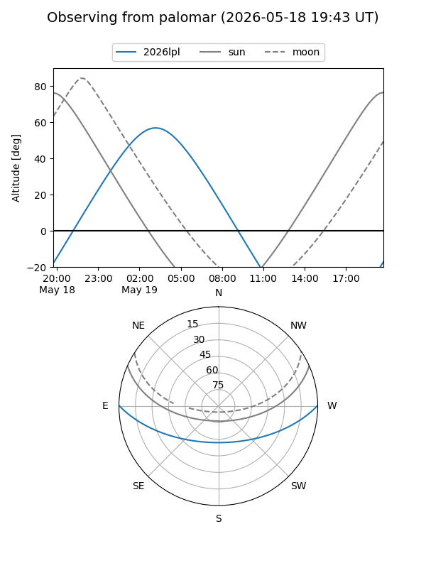
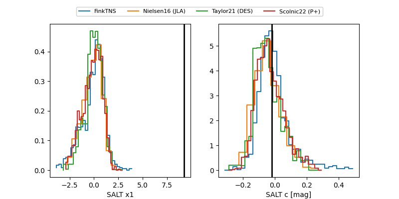

2026lpl
Target 2026lpl at 2026-05-19 05:26
Aliases and brokers:
FINK: link
Lasair: link
ALeRCE: link
TNS: link
YSE: link
alt names
ZTF26aauyzzb (ztf,fink_ztf)
2026lpl (tns,yse)
Coordinates:
equatorial (ra, dec) = 167.1858,+0.45853
equatorial (HMS+DMS) = 11:08:44.59,+00:27:30.72
galactic (l, b) = (255.9204,+53.68260)
Flags:
Photometry:
last ztfg=19.45, ztfr=19.42
3 ztfg, 3 ztfr detections
Lightcurve

Visibility


Additional plots
